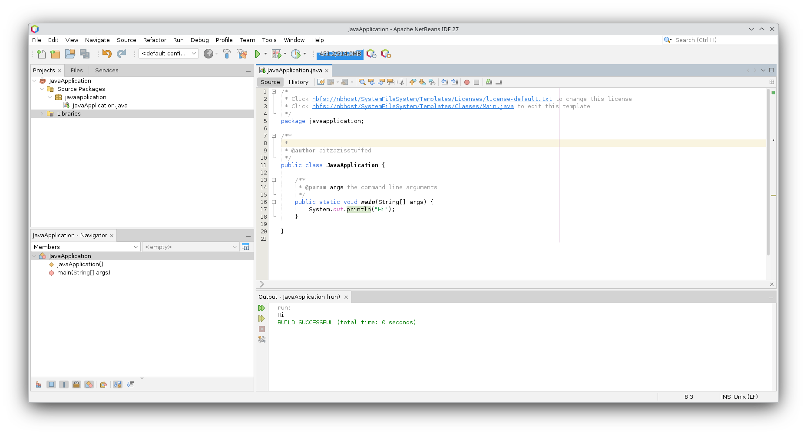

This project serves as an academic collection of notes and experiments in Introductory Java. It is intended both for professional software development and as a foundation for mathematical reasoning, with applications ranging from theoretical models to real-world problem-solving.
The material originates from my Cambridge International A Level Computer Science studies, but extends beyond to advocate a rigorous, mathematical approach to programming. The broader aim is not merely to learn Java syntax, but to promote an introspective framework for reasoning and implementation.
The initial step is configuring the environment. My system is summarized below:
.',;::::;,'. aitzazisstuffed@byte-me
.';:cccccccccccc:;,. -----------------------
.;cccccccccccccccccccccc;. OS: Fedora Linux 42 (KDE Plasma Desktop Edition) x86_64
.:cccccccccccccccccccccccccc:. Host: 83ER (IdeaPad Slim 3 15IAH8)
.;ccccccccccccc;.:dddl:.;ccccccc;. Kernel: Linux 6.15.8-200.fc42.x86_64
.:ccccccccccccc;OWMKOOXMWd;ccccccc:. Uptime: 1 day, 8 hours, 26 mins
.:ccccccccccccc;KMMc;cc;xMMc;ccccccc:. Packages: 2749 (rpm), 13 (flatpak), 8 (snap)
,cccccccccccccc;MMM.;cc;;WW:;cccccccc, Shell: bash 5.2.37
:cccccccccccccc;MMM.;cccccccccccccccc: Display (CMN1552): 1920x1080 @ 60 Hz in 16" [Built-in]
:ccccccc;oxOOOo;MMM000k.;cccccccccccc: DE: KDE Plasma 6.4.3
cccccc;0MMKxdd:;MMMkddc.;cccccccccccc; WM: KWin (Wayland)
ccccc;XMO';cccc;MMM.;cccccccccccccccc' WM Theme: Breeze
ccccc;MMo;ccccc;MMW.;ccccccccccccccc; Theme: Breeze (Light) [Qt], Breeze [GTK3]
ccccc;0MNc.ccc.xMMd;ccccccccccccccc; Icons: Tela-purple-dark [Qt], Tela-purple-dark [GTK3/4]
cccccc;dNMWXXXWM0:;cccccccccccccc:, Font: Noto Sans (10pt) [Qt], Noto Sans (10pt) [GTK3/4]
cccccccc;.:odl:.;cccccccccccccc:,. Cursor: breeze (24px)
ccccccccccccccccccccccccccccc:'. Terminal: konsole 25.4.3
:ccccccccccccccccccccccc:;,.. CPU: 12th Gen Intel(R) Core(TM) i5-12450H (12) @ 3.30 GHz
':cccccccccccccccc::;,. GPU: Intel UHD Graphics @ 1.20 GHz [Integrated]
Memory: 4.89 GiB / 15.31 GiB (32%)
Swap: 0 B / 8.00 GiB (0%)
Disk (/): 32.97 GiB / 475.35 GiB (7%) - btrfs
Locale: en_US.UTF-8
Begin by installing and configuring Flatpak. Afterwards, Java may be installed via the command line.

Following installation, proceed to set up Apache NetBeans, a versatile IDE for Java, JavaScript, HTML5, PHP, C/C++, and more. A quickstart guide is available on the official site.
My syllabus permits three languages: Python, Java, and Visual Basic .NET. While Python is often favored, it risks encouraging dependency rather than discipline. Visual Basic, meanwhile, has largely been eclipsed by C#. Java remains ubiquitous—powering systems from enterprise servers to embedded devices.
Even in popular culture, Java’s influence surfaces: in Iron Man 2, Oracle branding suggests that even Tony Stark’s systems may have run on Java.
Common tools include Ant, Maven, and Gradle. Ant and Maven, both Apache projects, laid the groundwork for modern builds, while Gradle dominates Android development. For beginners, Ant provides a straightforward entry point.